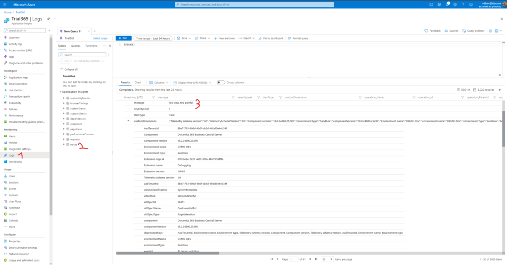
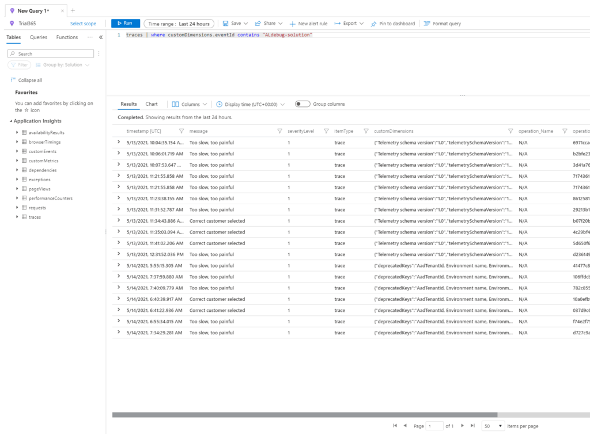
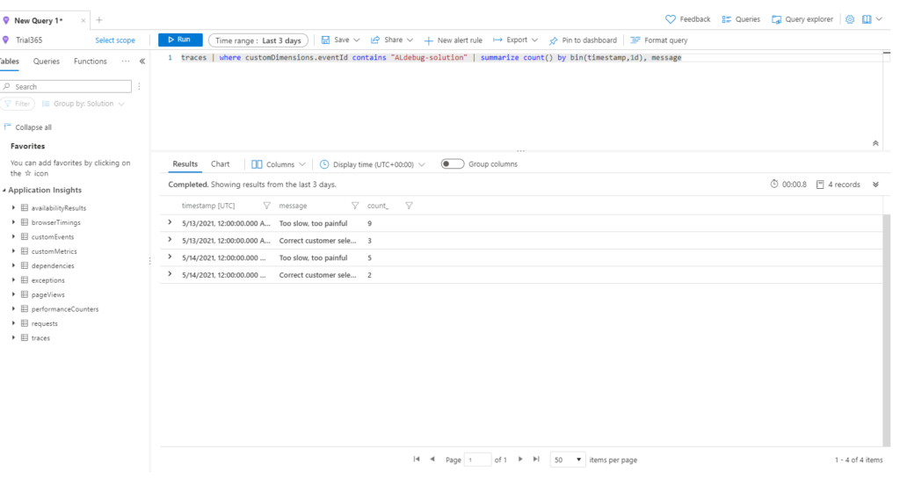

Azure Application Insights integration with Business Central is remarkably easy to set up and gives you powerful telemetry, custom trace logging, and query capabilities directly in the Azure portal. Microsoft's official documentation covers the connection setup well: Monitoring and Analyzing Telemetry in Business Central.
Once the Application Insights connection string is configured in your BC environment, you can emit custom log messages from AL code using Session.LogMessage. A good pattern is to wrap it in a helper codeunit so you have a consistent interface across your extension:
codeunit 50200"Telemetry Helper"
{
procedure LogMessage(EventId: Text; Message: Text; Verbosity: Verbosity; DataClassification: DataClassification)
begin
Session.LogMessage(
EventId,
Message,
Verbosity,
DataClassification,
TelemetryScope::ExtensionPublisher,
'Category', 'MyExtension'
);
end;
}With that helper in place you can instrument any slow or business-critical code path. Here is an example that logs timing information for a method that is known to be slow under load:
procedure SlowAndPainful()
var
TelemetryHelper: Codeunit"Telemetry Helper";
StartTime: DateTime;
ElapsedMs: Integer;
begin
StartTime := CurrentDateTime();
// ... expensive operation here ...
ProcessLargeDataSet();
ElapsedMs := Round((CurrentDateTime() - StartTime) / 1, 1);
TelemetryHelper.LogMessage(
'EXT-0001',
StrSubstNo('SlowAndPainful completed in %1 ms', ElapsedMs),
Verbosity::Normal,
DataClassification::SystemMetadata
);
end;
In the Azure portal, navigate to your Application Insights resource and open Logs. Your custom messages appear in the traces table. You can filter by your custom category or event ID to isolate your extension's logs from the standard BC telemetry.

Building a KQL query to track the duration of your slow method over time is straightforward. You can pin the result to an Azure Dashboard or set up an alert to fire when average duration exceeds a threshold:
traces
| where customDimensions["eventId"] =="EXT-0001"
| extend ElapsedMs = toint(extract(@"(\d+) ms", 1, message))
| summarize avg(ElapsedMs), max(ElapsedMs), count() by bin(timestamp, 1h)
| order by timestamp desc
The combination of BC's built-in telemetry events and your own custom LogMessage calls gives you a complete picture of what is happening in production — without any additional infrastructure beyond the Application Insights resource itself.